What I'm doing
Coding
As i have mentioned before, I'm doing a computer science degree and work as a software engineer. So I have to code. Not a fan of AI but use it. hate electron bloatware. Interested in low level and system programming, but I think I have some skill issues.
Mainly use Typescript but have done projects in java, python, Go, C, and C++. I use "Zed" as my main text editor, which is relatively new, lightweight text editor written in rust and neovim when working with servers. Yes I know vim.
I'm not gonna explain everything in text, so here are some Images.
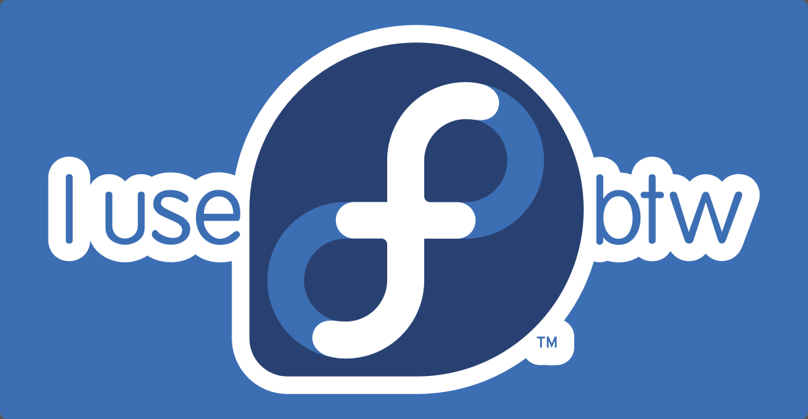
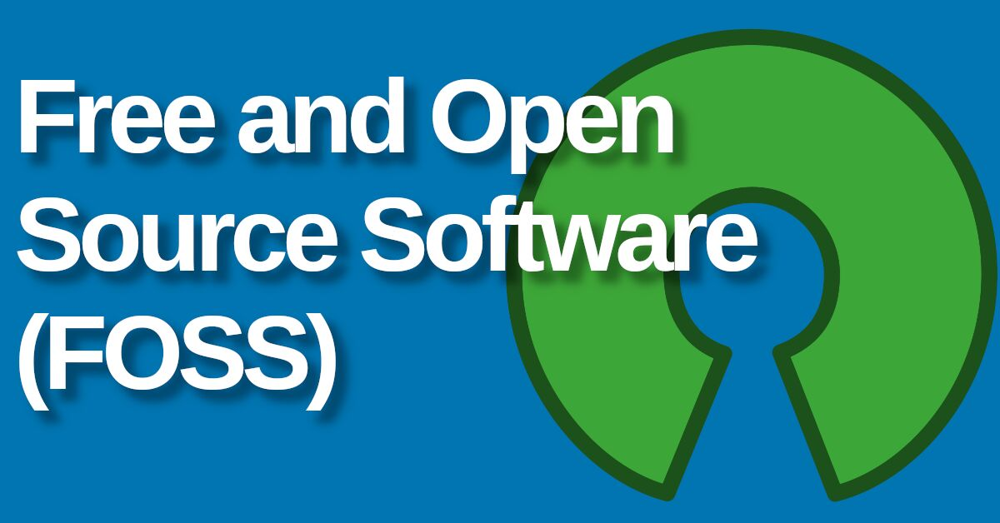


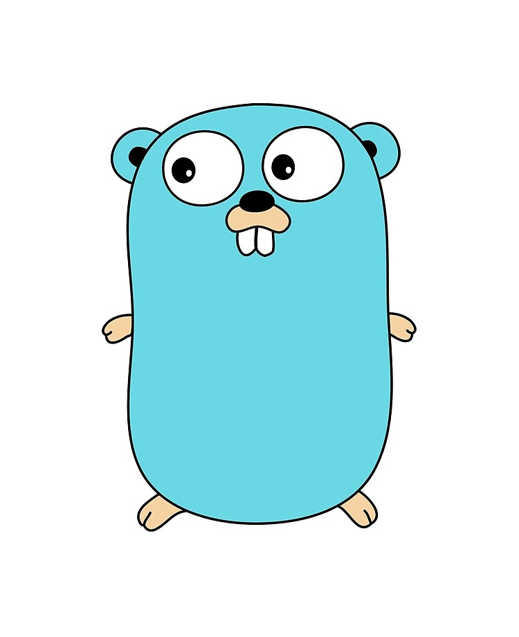


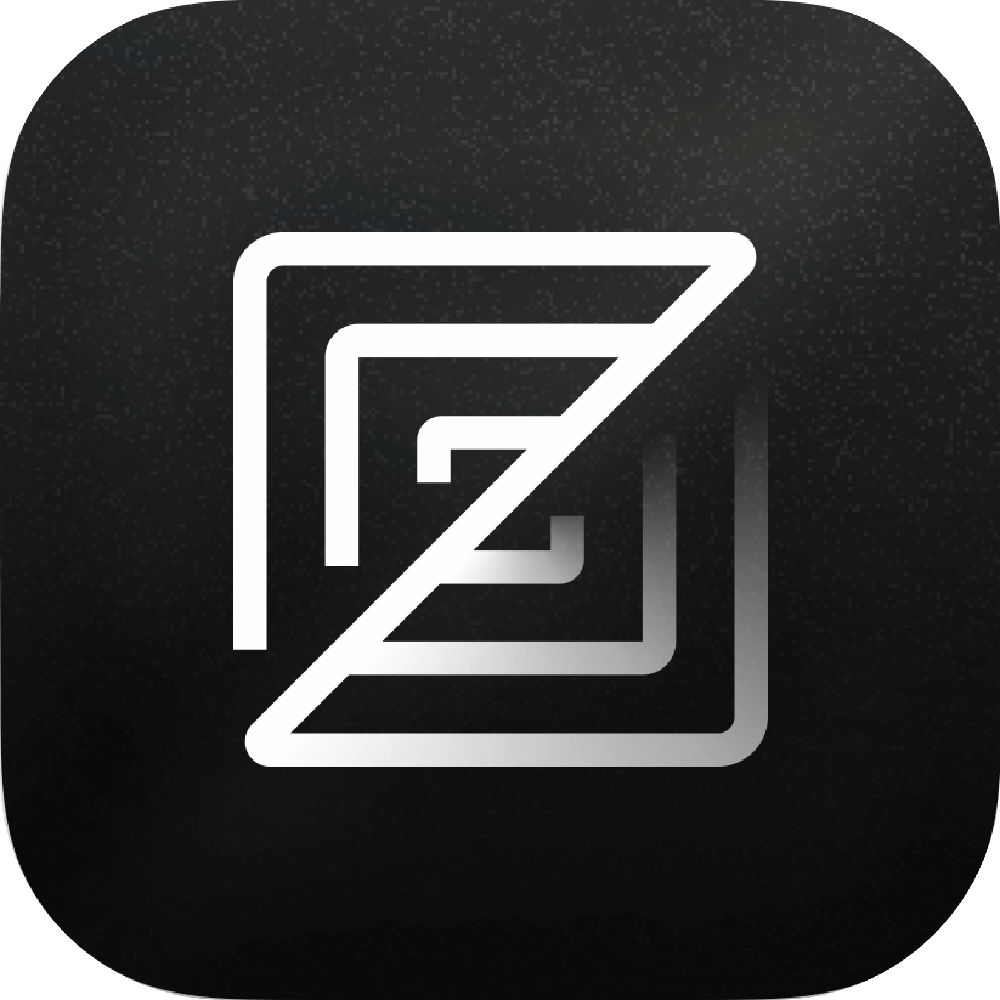
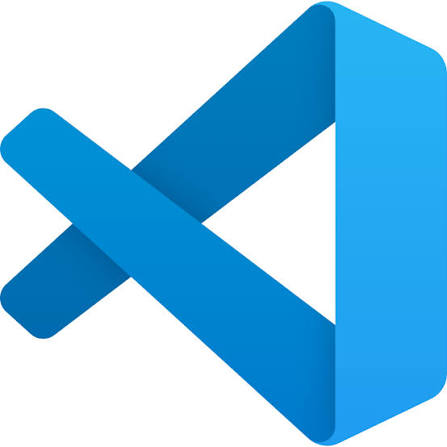


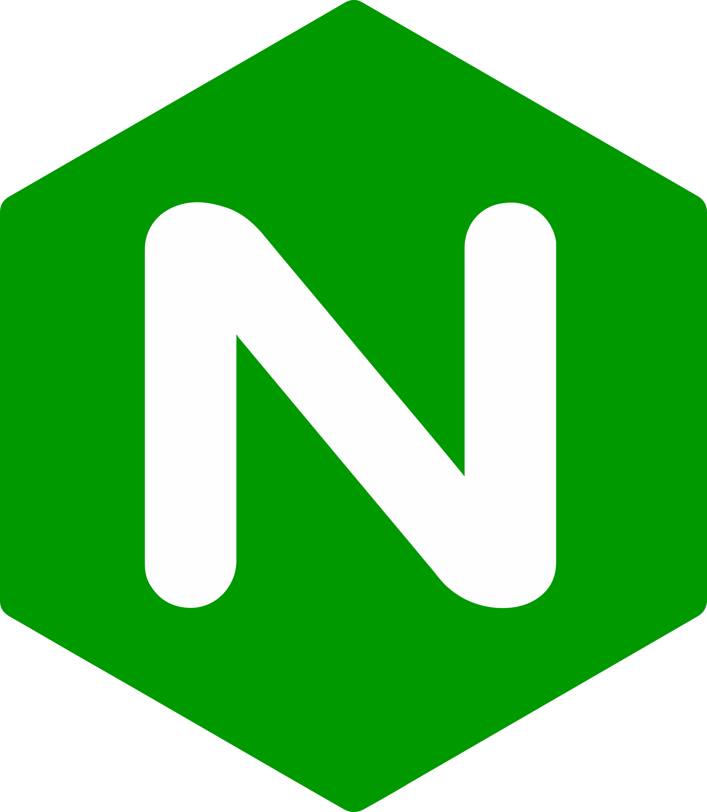


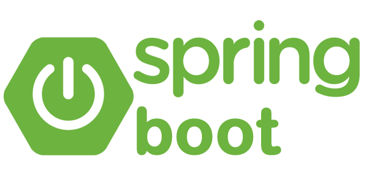
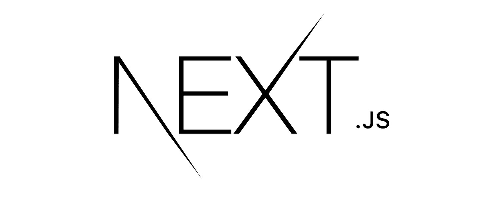
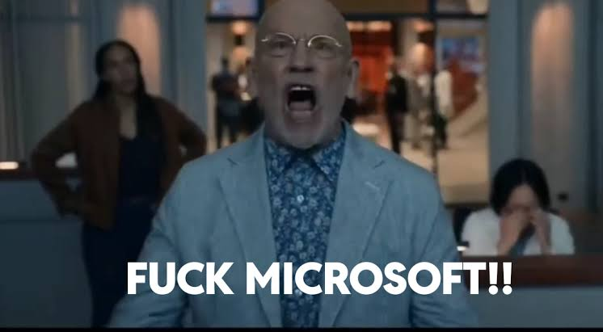
Weightlifting
I have started weightlifting back in 2023 (not bodybuilding btw) but I have to stop that for some reasons. Then I started back in March 2026, at that time my max snact and c&j were 60kg and 80kg.
Weightlifting Stats (1 rep max)
| Lift | One Rep Max |
|---|---|
| Snatch | 60kg |
| Clean & Jerk | 85kg |
| Clean | 91kg |
| Back Squat | 115kg |
| Front Squat | 105kg |
My weightlifting gallery
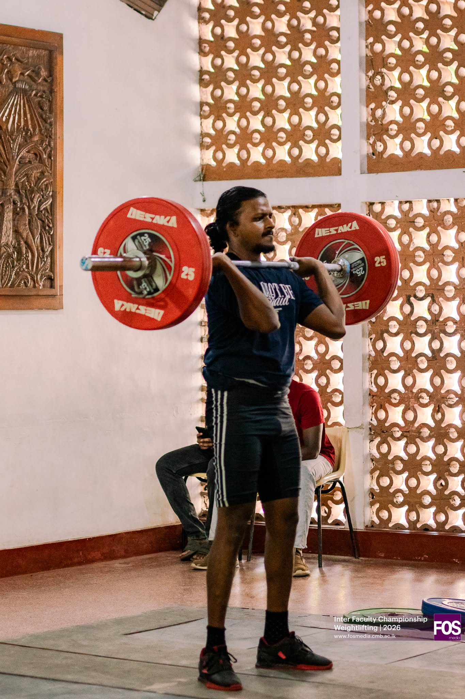
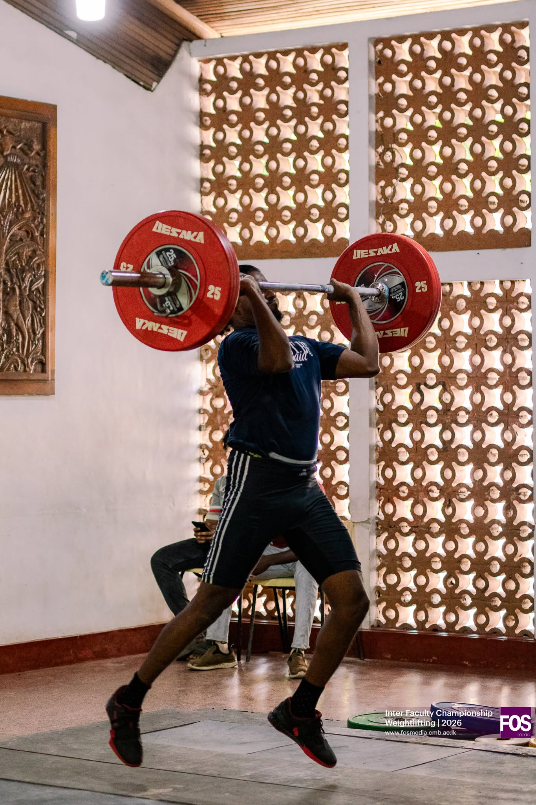
Movies
I watch movies. Mostly hollywood. When I was young (late teen & early 20s), I loved mind twisting & complex movies, like nolan's. When I grow older, started to like simple, chilling movies. The turning point is pulp fiction. Movies are big part of my life. Learned lot and still learning from them. Some stats,
Top 10 movies (IMO)
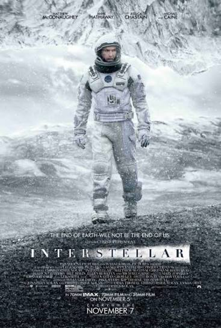
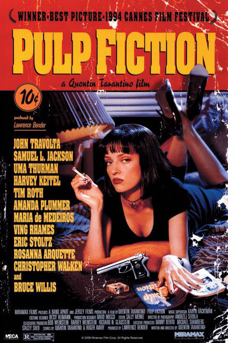

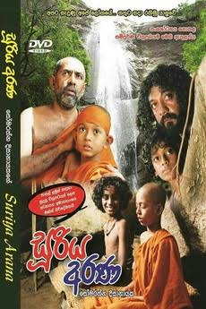

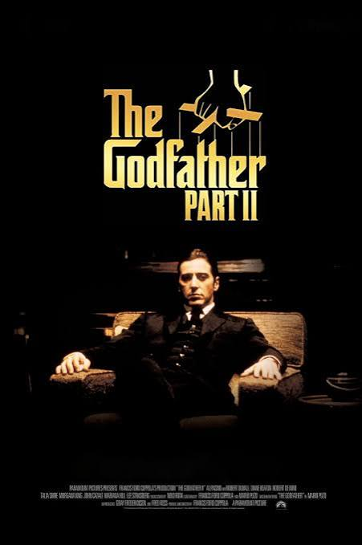
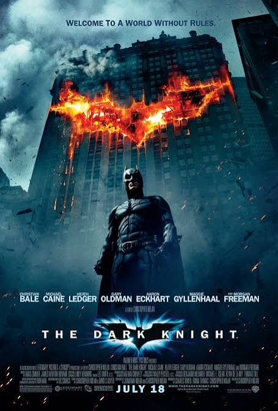
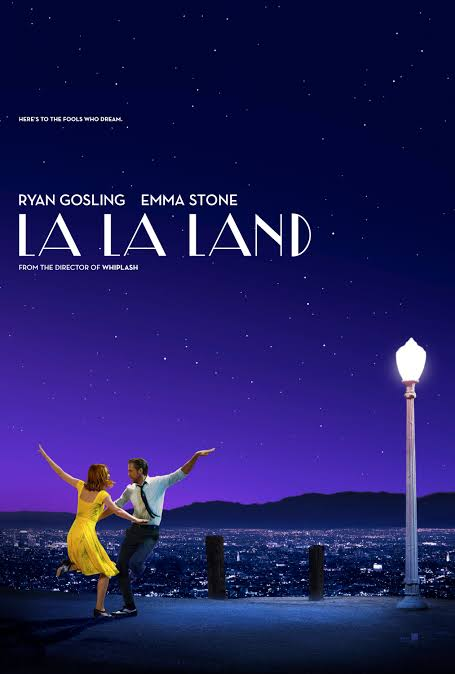
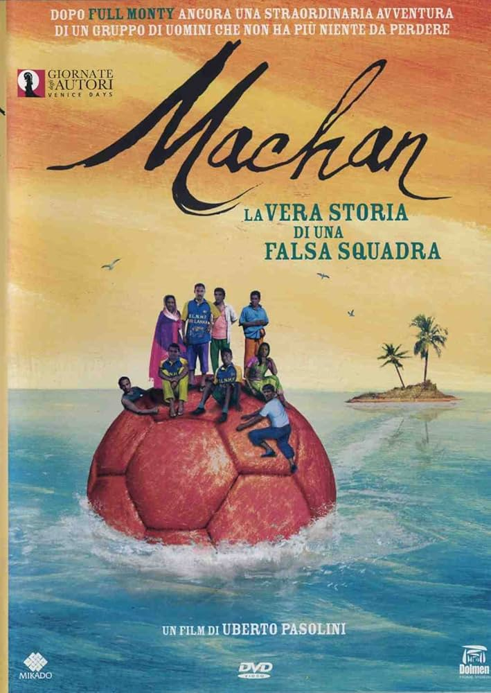
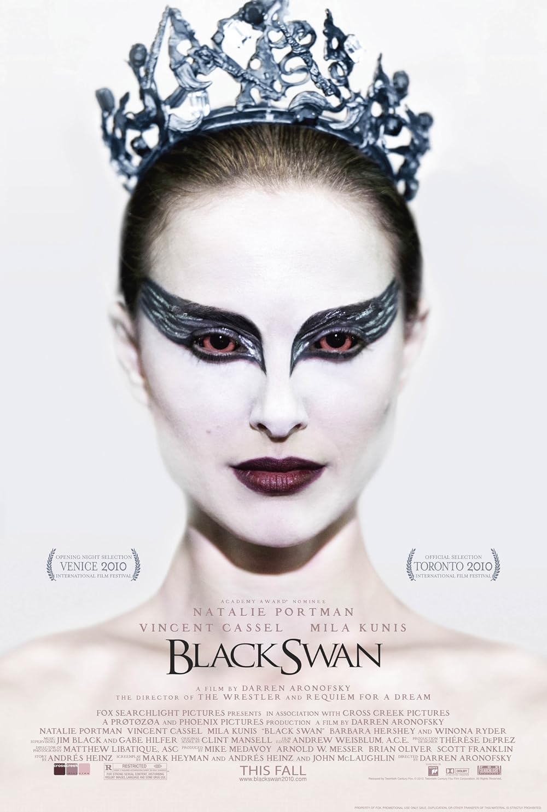
I have tried to make some short films, those are just small attempts, I have and will upload them to my YouTube channel.